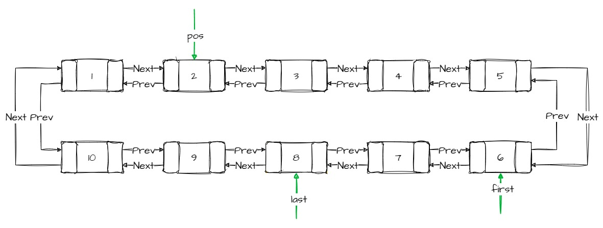
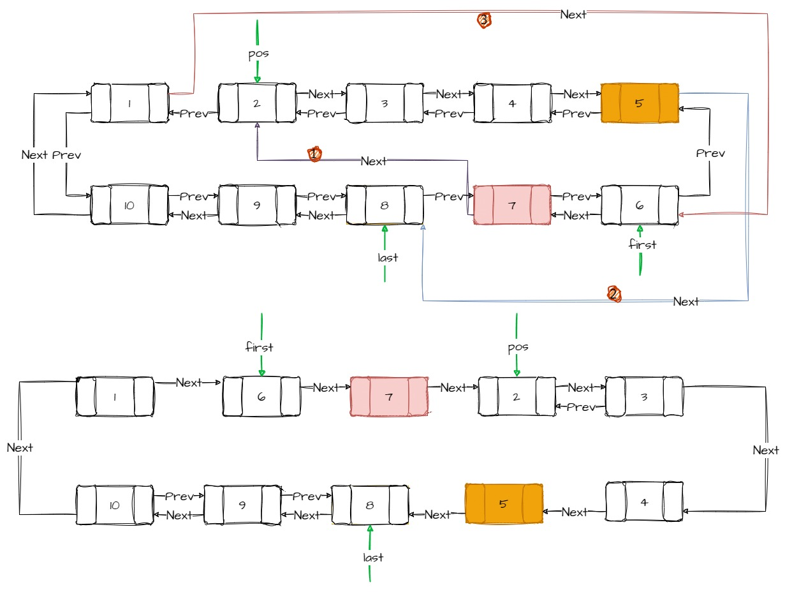
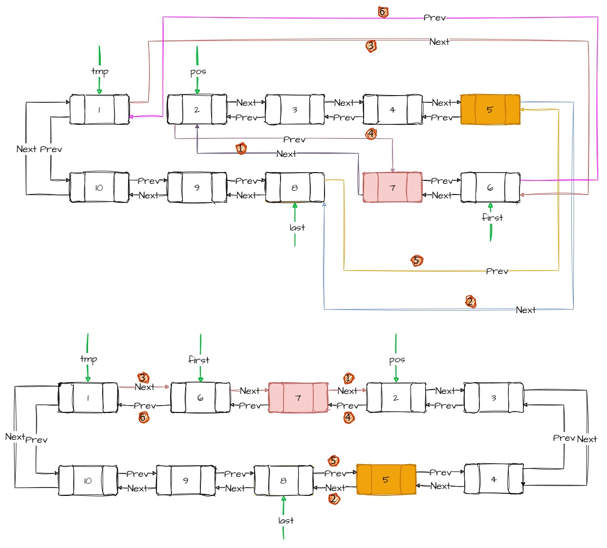
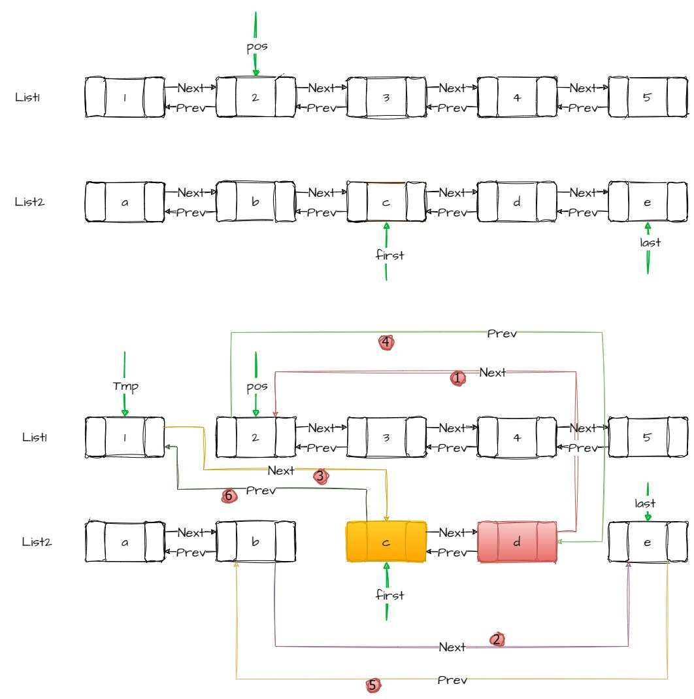

transfer¶
将[_first, _last）内的元素迁移到_position，不包括last
protected:
void transfer(iterator __position, iterator __first, iterator __last) {
if (__position != __last) {
// Remove [first, last) from its old position.
__last._M_node->_M_prev->_M_next = __position._M_node;
__first._M_node->_M_prev->_M_next = __last._M_node;
__position._M_node->_M_prev->_M_next = __first._M_node;
// Splice [first, last) into its new position.
_List_node_base* __tmp = __position._M_node->_M_prev;
__position._M_node->_M_prev = __last._M_node->_M_prev;
__last._M_node->_M_prev = __first._M_node->_M_prev;
__first._M_node->_M_prev = __tmp;
}
}
transfer: 接口是不公开的，此接口是protected， 这个接口可以实现同一个list 内部的transfer，也支持不同的list之间的transfer

1. Remove [first, last) from its old position¶
执行完这3条语句，整个链表的next通路是连贯了
__last._M_node->_M_prev->_M_next = __position._M_node;
__first._M_node->_M_prev->_M_next = __last._M_node;
__position._M_node->_M_prev->_M_next = __first._M_node;

2. Splice [first, last) into its new position¶
执行完这3条语句，整个链表的prev通路是连贯了
__position._M_node->_M_prev = __last._M_node->_M_prev;
__last._M_node->_M_prev = __first._M_node->_M_prev;
__first._M_node->_M_prev = __tmp;

3. the different list¶
